«ВЕЧНЫЙ» КАЛЕНДАРЬ
Тем дизайнерам, которые не хотят довольствоваться календарными сетками, получаемыми с помощью макроса или ещё откуда-то, а хотят создать свой оригинальный художественный или просто табель–календарь, предлагаю способ, который позволит Вам использовать Ваш календарь в качестве шаблона для создания аналогичного календаря и в последующие годы, причём с невероятной лёгкостью.
Чтобы из календаря текущего года сделать календарь на следующий, нужно всего лишь, выбрав инструмент Текст, поставить курсор перед числом 1 января и нажатием клавиши «Enter» «сдвинуть» все числа на одну ячейку вниз.Такой шаблон можно использовать и для создания других шаблонов табеля–календаря, организованного по другой схеме.
Конечно на создание первого варианта придётся затратить некоторое время, зато из созданного календаря календарь на следующий год можно будет получить буквально одним нажатием клавиши (не считая действий по «перекрашиванию» чисел, соответствующих выходным дням и случая с високосным годом).
Дело в том, что этот календарь представляет собой матрицу из чисел, которые Вы располагаете по любой нужной Вам схеме: месяцы расположены или по схеме 3 х 4, или 6 х 2, или все 12 месяцев в одну строку, или в два столбца, как угодно.
Каждое число занимает свою ячейку, как в таблице. Только каждая такая ячейка – это текстовая рамка, такая маленькая, что в каждой текстовой рамке помещается одно число. Все ячейки последовательно связаны между собой как связанные текстовые блоки. Размер шрифта должен быть подобран соответственно размеру ячейки: не должен быть слишком большим, чтобы число могло свободно поместиться в ячейке, и не должен быть слишком маленьким, чтобы в одной ячейке не могло поместиться два числа, обычно это примерно 50 – 70 % высоты ячейки.
Начиная создание календаря, определитесь с первоначальной схемой. Допустим, это будет блок, где месяцы организованы по схеме 3 х 4.
Прикиньте, какой понадобится размер ячейки. Это не маловажный момент, т.к. масштабировать календарь можно будет только переведя все числа в кривые. При этом все связи между числами будут утрачены и календарь перестанет быть шаблоном для последующих календарей.
Создайте одну ячейку (текстовый блок) и с помощью окна Преобразование дублируйте шесть раз со смещением вниз, с шагом, равным высоте ячейки. Получилась колонка для одной недели. Затем дублируйте всю группу из семи ячеек со смещением вправо, также с шагом, равным ширине ячейки пятнадцать раз. Получилась матрица для трёх месяцев. Выделите её и продублируйте три раза со смещением вниз, несколько большим, чем высота полученной матрицы, чтобы было место для названий месяцев. В случае другой схемы дублируйте недели столько раз, сколько нужно, чтобы получить матрицу, соответствующую вашей схеме.
Теперь заполним ячейки числами календаря (см. рисунок ниже).
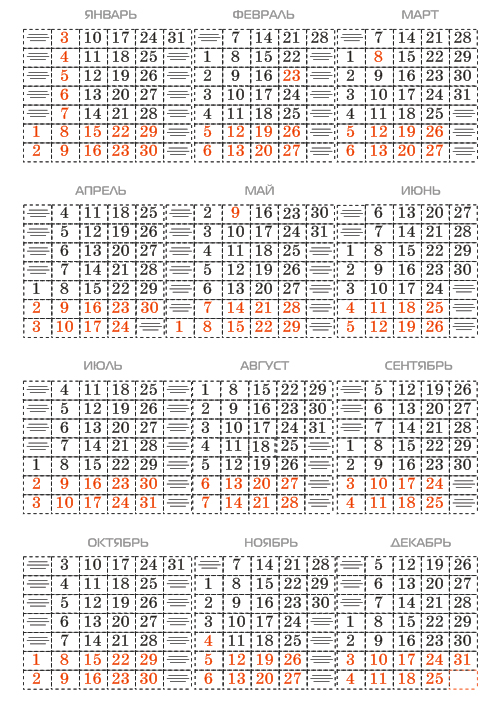
Затем, набравшись немного терпения, свяжем последовательно все текстовые блоки–ячейки, включая свободные между числами соседних месяцев. Включение свободных ячеек между месяцами не лишнее, это позволит минимизировать переползание чисел одного месяца к числам другого, когда Вы будете использовать этот календарь–шаблон в будущем.
На рисунке ниже видно, как после связывания ячеек все числа переползли к началу матрицы.
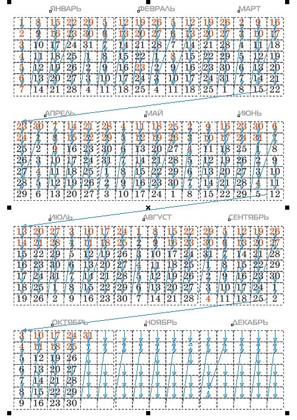
Выбрав инструмент Текст, поставьте курсор перед 1 января, и нажатием «Enter» несколько раз поставьте число 1 января на соответствующее место (если 31 декабря нынешнего, 2010-го года приходится на пятницу, то 1 января следующего, 2011-го года должно быть субботой).
Затем, устанавливая курсор перед 1 числом каждого последующего месяца, и нажимая «Enter» подряд по 7 раз, сдвигаете каждый месяц на одну колонку правее. Нажатия можно делать достаточно быстро, не дожидаясь, когда все числа перестроятся полностью.
Добавьте названия месяцев, дни недели, само число года в отдельном слое, чтобы они пока не мешали.
Готовый календарь–шаблон показан на рисунке ниже.
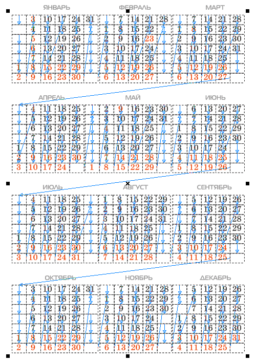
На его примере рассмотрим создание на его основе следующего календаря на 2012 год. Не забудьте, что 2012 год – високосный.
Но для любого года переделка календаря начинается с того, что мы смотрим, каким днём недели оканчивается текущий год. В рассматриваемом примере 2011 год оканчивается субботой. Поэтому сначала устанавливаем 1 января на воскресенье.
Затем в феврале, после числа 28, в ячейку ниже надо будет добавить число 29 и нажатием клавиши «Enter» «столкнуть» все последующие числа на одну ячейку вниз. (Високосные годы те, у которых число в двух младших разрядах кратно 4, кроме годов, заканчивающихся на 100).
После подвижек чисел выделите сразу все числа и «перекрасьте» их в чёрный, затем, выделяя рамкой числа, соответствующие выходным, «перекрасьте» их в красный. В данном примере в рамку можно захватывать числа поквартально.
На рисунке ниже видно, как после добавления 29 февраля и сталкивания последующих чисел вниз на одну ячейку, числа последнего квартала сместились на колонку правее и пропало (вытеснилось) 31 декабря.
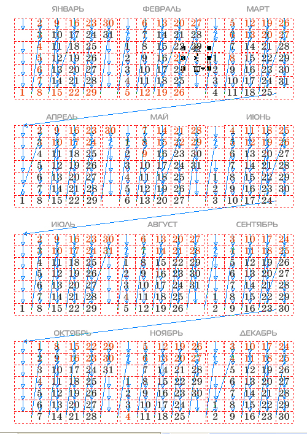
Поставив курсор в ячейку левее 1 октября, нажмите подряд 7 раз «Delete».
На рисунке ниже видно, что числа последних трёх месяцев «вернулись» на своё место.
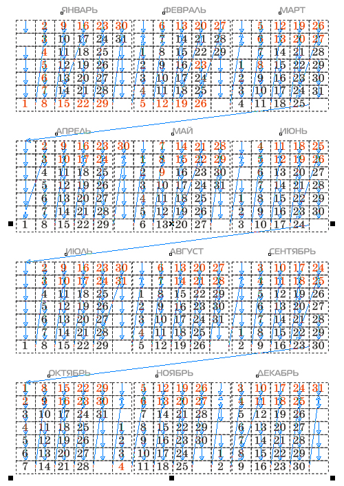
После «перекрашивания» выходных и праздничных дней календарь на 2012 год готов.
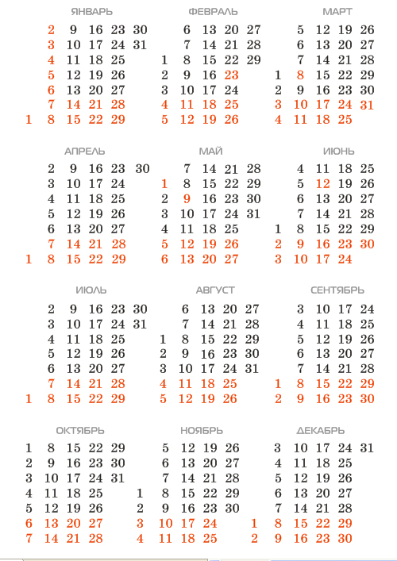
Для улучшения вида можно чуть придвинуть колонки с одноразрядными числами к соседним, чтобы интервалы между колонками были примерно одинаковы. Лучше это делать не с шаблоном, а сохранить в другой файл и перевести числа в кривые.
При желании «перекроить» календарь-шаблон по другой схеме, группируйте числа одного месяца, вместе с названием месяца, и перетаскивайте на новое место.
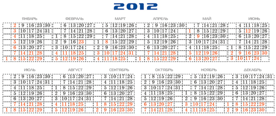
Специально для cdrpro.ru
Копирование урока или части его и публикация любым способом без письменного согласия автора запрещены.
mmgs
Вся прелесть предложенного мной способа как раз и состоит в том, что можно создать календарь любого вида. Ну нравится Вам неделя строкой, сделайте строкой.
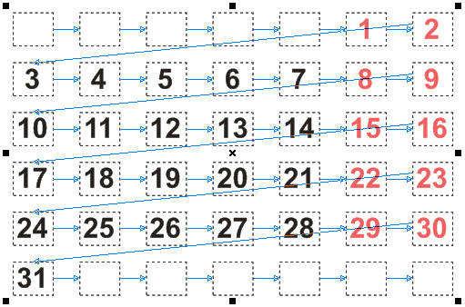
Вы , если бы не были ленивы, давно бы сами это сделали. Убили бы меньше времени, чем на изобретение «своей оригинальности» и не отвлекали бы порядочных людей.
Вся «оригинальность» Вашей затеи состоит в том, что Вы хотите создать такой же легкоперестраиваемый шаблон, но вот столкнуть числа Вам надо непременно клавишей табуляции. А когда это не получается, Вы возмущаетесь, почему? А причина в Вашем характере: Вы всё время торопитесь (это даже заметно по Вашей излишней активности на форуме, всё время спешите вставить свою реплику), вместо того, чтобы сесть спокойно и самому разобраться, как происходит форматирование текста в текстовом блоке.
Что есть табуляция? Это табуляционный отступ, отступ на заданную позицию. Когда в строке несколько табуляционных отступов, то они работают последовательно. Когда все отступы в строке использованы, то другие не работают, сколько бы Вы не нажимали «Tab». Даже если текст автоматически переходит на новую строку при переполнении, то первый табуляционный отступ на новой строке заработает только после принудительного перевода строки клавишей «Enter». Эти дополнительные знаки перевода строки всегда будут мешать перестройке календаря.
Ваша затея с табуляцией провальна, так как не позволяет создать «вечный» календарь.
Вашу бы энергию, да в полезное русло!
Глубокоуважаемый Sancho!
Цитата:...Есть же генератор календарей...
Я, например, тоже несколько лет сталкивался с такой проблемой — календарной сетки.
Если честно, до сих пор делаю её вручную.
Вы ругаете творческий народ, а не говорите как это сделать проще.
Не буду умничать, друг мой Solowejka, действительно есть макрос, в корне корела.
З.Ы. Я уважаю людей, изобретающих велосипед !!!!!!!!!!!!!!!!!!!!!!!!!!
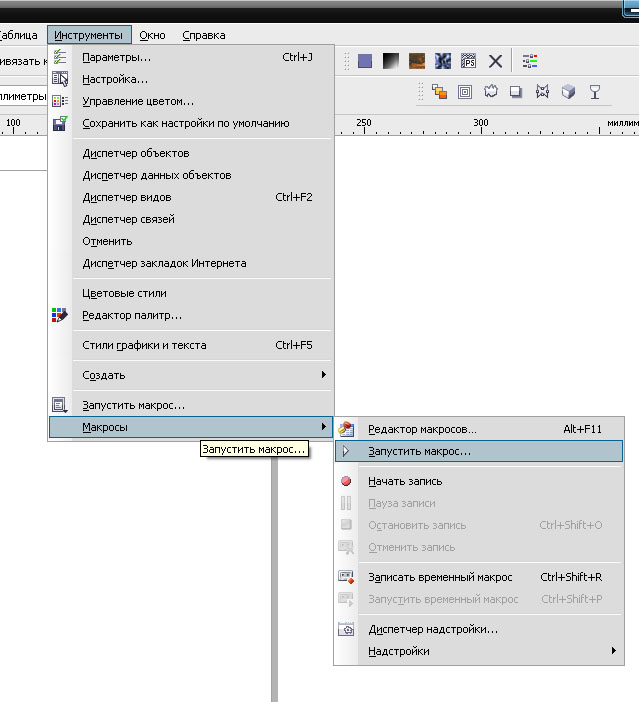
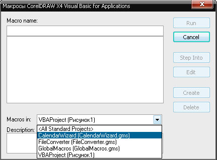
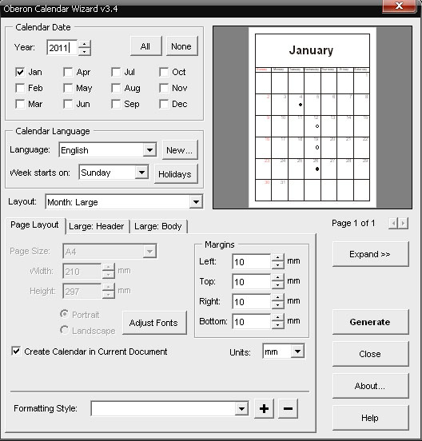
Понажимав на разные менюшки, и поставив разные галочки, можно добиться желаемого результата.
Эксперементируйте, Друзья мои!
Это увлекательно!
Solowejka респект!
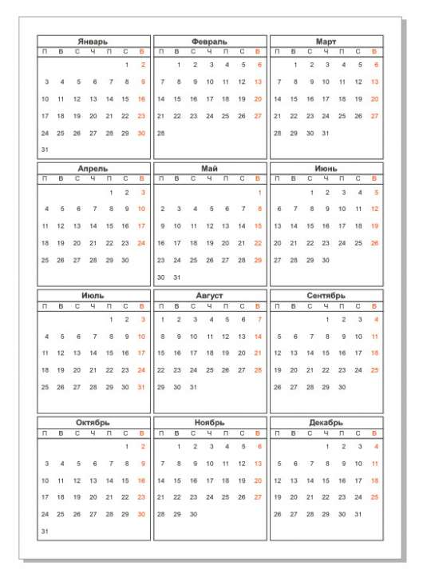
P.S. Календарную сетку надо делать вручную, дабы прочувствовать тяготы и лишения грядущего года!
А вы знаете, что в наступившем 2011 году мы станем свидетелями двух лунных и четырех солнечных затмений?
Так что о "ВЕЧНОМ" поговорим в 2013, а лучше в Сочи — 2014, а ещё лучше в 2018 на чемпионате!
Статистика:
Что касается невисокосных годов 2010-2011.
Компановка января — идентична октябрю.
Апрель — похож на июль.
Февраль — март, ноябрь.
Сентябрь — декабрь.
Так что 5 месяцев из 12 — почти, можно делать параллельно. :D
История:
Где-то скачал календарь Ацтеков
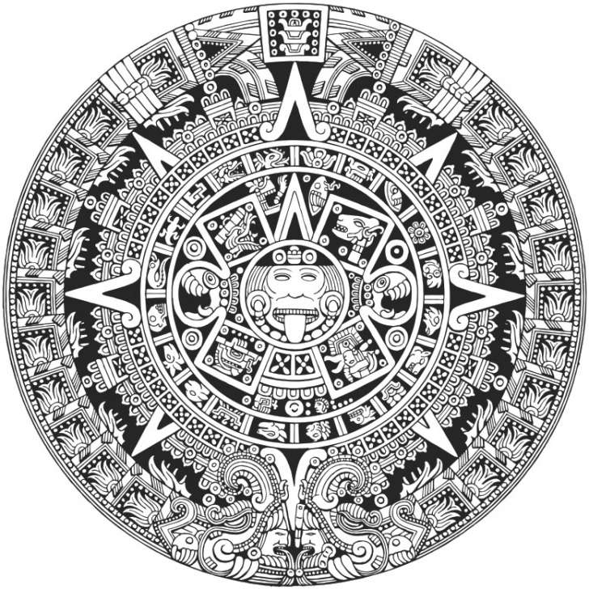
Никаких цифр, и всё понятно......ацтекам! :)
Нам тоже нужны календари — понятные!
Тогда самое место не дизайнером за компом, а разнаробочим например. Таскать тяжести и махать ломом. :)
Раз в год уж можно помохать
точно, иногда и помахать можно :)
Санчо, почему ты все вопросы сводишь к каноническим ответам?
пускай каждый сам решает какой рукой ему удобно...
пример Соловейки конечно классный (взял на вооружение), но у меня же есть своя голова на плечах и в ней зреют свои мысли. и я вот хочу попробовать сделать по своему, как мне будет казаться удобнее и красивее.
все мы тут не "биороботы" чтобы делать тупо по шаблону, а "творческие люди", поэтому каждый хочет что-то сделать по-своему, наперекор шаблонам.
Хмм... мне сейчас нужно было календарь делать корпоративный, Я все делал вручную. В принципе работы на 20 мин. Хотя конечно если бы знал где достать генератор, возиться бы с ручной расстановкой не стал бы.
Вполне функциональная версия встроена в CorelDRAW по умолчанию.
Узнал про генератор только в этой теме, раньше не знал (правда и календарей раньше не делал).
Календарь вышел примерно такой:
Страницы